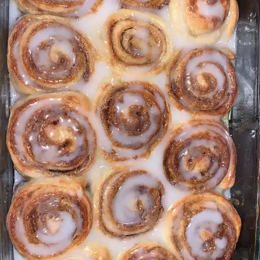

Easy Cinnamon Rolls

What are the Easy Cinnamon Rolls?
This is an easy recipe to follow to make delicious cinnamon rolls.
Even if you make a mess, they will still turn out great!
Ingredients
- 1 lb of loaf frozen bread dough, thawed
- 3 tblsp butter, melted
- 2/3 cup chopped walnuts
- 1 tblsp ground cinnamon
- 1 tblsp water, or as needed
- 1/3 cup heavy whipping cream
- 2/3 cup stifed confectioners' sugar
- 2 tblsp milk
- 1 dash vanilla extract
Steps
- Lightly grease 2 round cake pans with butter.
- Roll bread dough out to an 6x18-inch rectangle. Brush with melted butter.
Combine brown sugar, walnuts, and cinnamon in a small bowl; sprinkle
over butter. Roll dough into a log, starting at the long edge. Moisten
edge with water and seal. Cut log into 20 slices; arrange rolls, cut sides
down, in prepared cake pans. Cover with a towel and let rise in a warm
place until doubled in volume, about 90 minutes.
- Preheat oven to 350 degrees F (175 degrees C). Pour heavy cream over dough.
- Bake in preheated oven until golden brown, about 25 minutes.
- Mix confectioners' sugar, milk, and vanilla extract in a small bowl; drizzle
over warm cinnamon rolls to serve.